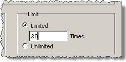

The assertion
failure limit determines how many times Questa SIM processes
an assertion before disabling it for the duration of the simulation.
By default, the failure limit is set to “unlimited.” In other words,
assertions will not be disabled during the simulation. You can change
the permanent default by editing a modelsim.ini variable
or by using the assertion fail command. You may also set the assertion
failure limit for the current simulation using the GUI.
Procedure
- Change the default assertion
failure limit with any one of the following:
- To set the assertion failure
limit of the current simulation with the GUI, do either of the following:
Either of these actions opens
the Configure assertions dialog box where
you can change the limit for all assertions or for the selected
assertion in the Limit section of the dialog box (Figure 1).
Figure 1. Setting Assertion
Failure Limits
The assertion count is not
verified until the end of the current time stamp. If multiple threads
are active for a given property and if all of them fail at the same
time, then all fail messages are reported. You may see more fail
messages than the limit you set.
Questa SIM continues
to respond to assertions if their limit has not been reached. The
limit applies to the entire simulation session and not to any single
simulation run command.
Examples
The following use of the assertion
fail command
assertion fail -r / -limit 4 mydesign
sets the failure response limit to
4 for all assertions in mydesign. Each assertion
failure will be responded to a maximum of 4 times during the current
simulation. The “-r /” argument indicates that the assertion command
should start at the root of mydesign and
find all assertions.